OpeningDad Is on the Roof
A woman went on vacation and asked her brother to take care of her cat. A few days into the trip, she received a text message from him that said:
“Your cat is dead.”
She was heartbroken. She really loved that cat.
A few days later, when she returned home and met up with her brother, she said, “Ya know, you could have broken it to me a little more gently.”
Her brother looked at her, confused. “How would I have done that?”
“Well,” she said, “maybe you could have texted, ‘Your cat is on the roof.’ Then, a day later, you could have said, ‘We’re trying to get her down, but she won’t budge.’ The next day, ‘We finally got her down, but she’s not doing well.’ And then finally, ‘I’m so sorry, but she didn’t make it.’ That way, I would have had some time to process it instead of just being hit with it all at once.”
He thought for a minute and then said, “Got it, I’ll remember that for next time.”
A week later, the woman got a text from her brother. It read:
“Grandma is on the roof.”
That was one of my dad’s favorite jokes.
The morning after Dad passed, we were sitting in the living room talking. Things were a little somber. And then Amy goes:
“Ya know, when you called me last night and told me that Dad had passed away, I was so disappointed in you. I just can’t believe you didn’t tell me Dad was on the roof.”
We both agreed that, in that moment, Dad would also have been very disappointed in me… Sorry, Dad.
The “Where”The South End of Baldwin Road
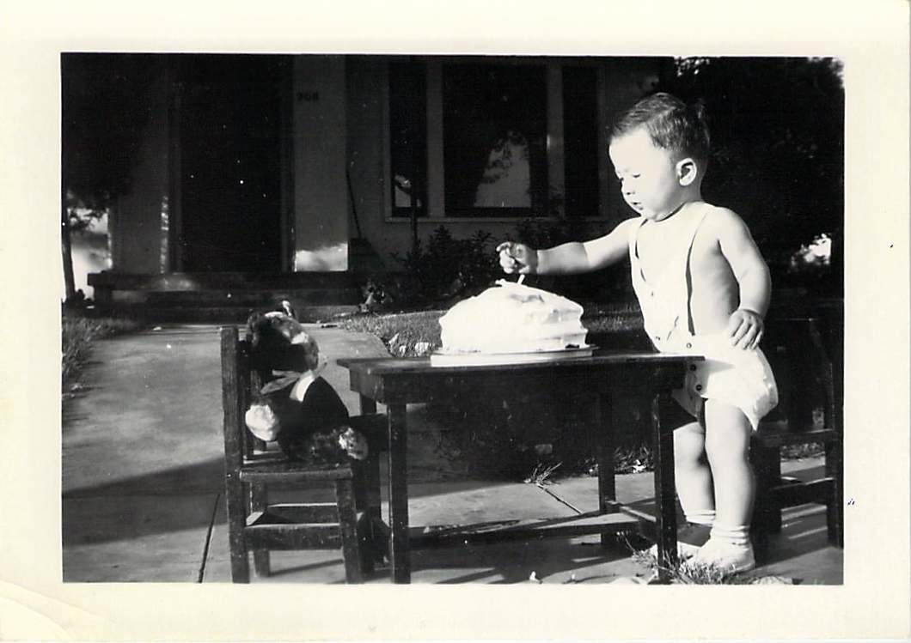
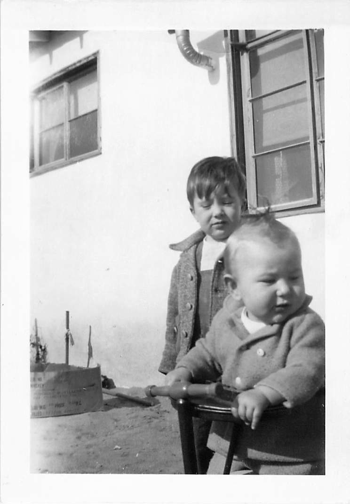
Dad was born on June 26th, 1946, in Modesto, where he lived for two and a half years before he moved there [points across the road] to the house across the street. He spent most of his next 75 years here on the south end of Baldwin Road.
By tradition, eulogies often go chronologically. I’m supposed to tell you about what he did as a kid, then as a young man, in his working years, his family years, his retirement years.
That’s not what I’m going to do. I began at the beginning not because it told you the “when”… but because it told you the “where.”
I’d like to tell you about my dad’s life—about who he was and what he did and about the things that mattered most to him.
But in one way or another, all those things related to this place [gestures all around] and the home that he and my mom built on it.
This was the center of his gravity, and it’s the linchpin of what I want to share with you today.
The MentorHis Workshop
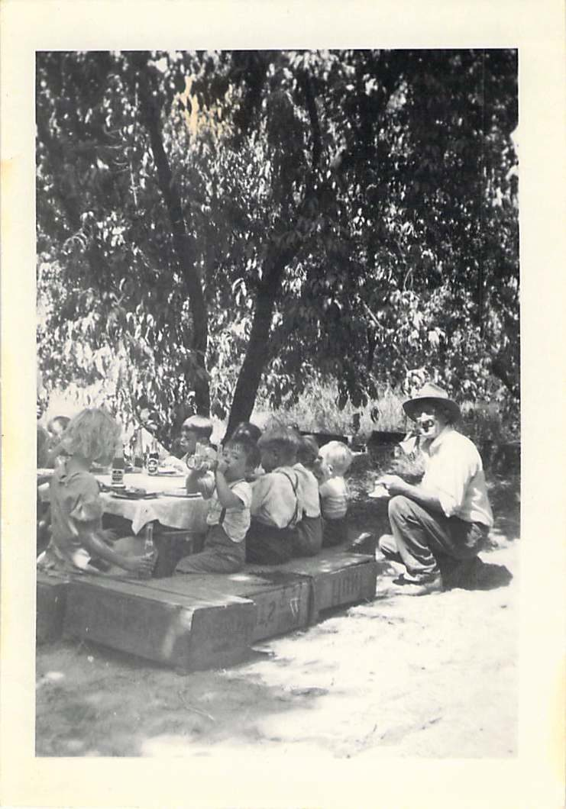
Dad was a mentor… and this [gestures all around] was his workshop. He wasn’t a woodworker or a handyman or a mechanic, but he could do anything with a rake, a shovel, a pair of pruning shears, or a tractor. He could tell you anything you wanted to know about buying or selling real estate.
Yet, for someone with such mastery of those arts, as a mentor, he was more patient than he ever was critical. I imagine that came, in part, because of the sheer number of “greenhorns” that passed through the ranch.
Year after year, his friends’ kids, his kids’ friends, the people who worked for him and their kids, the neighbors, the out-of-towners, or just some local Hughson kids looking for a job, showed up to work here on the ranch. And year after year, Dad taught them. Patiently corrected them. Made up new tasks so they could get in a few more hours and earn a few more bucks.
He often joked that he sent more kids to college than any school ever did, claiming that once they got a taste of working on the ranch, they wanted to get an education so they didn’t have to keep doing it.
Buried under that joke was an ever-present value: Dad never thought that mentoring young people was simply about teaching them to use a shovel or a rake. And he never really thought it was just about giving them the chance to earn a few bucks.
He was patient, I think, because he was trying to teach each person more than just the task that was right in front of them.
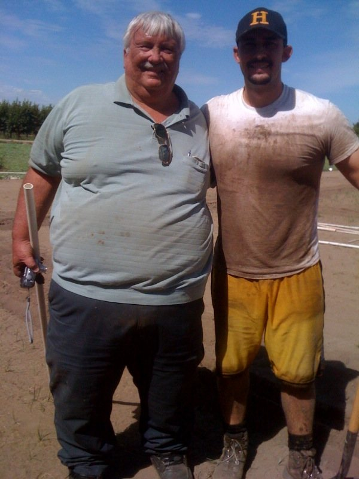
When I went to sign up for classes at JC, Dad got so frustrated with the counselors that he appointed himself a guidance counselor. We carefully worked through the catalog, marking up the pages and charting a course to graduation. But it didn’t end with charting my course.
After all, Dad wasn’t one to waste such a valuable self-appointed position. For much of the late ’90s and early 2000s, Dad was the go-to guidance counselor for Hughson-born MJC students.
I see heads nodding in the crowd [calls out a few]. No appointment needed… the kitchen table was always open for course planning.
Dad was also the world’s best armchair entrepreneur. One of his favorite pastimes was to sit around and come up with new business ideas.
Lots of them were more for chuckles than profit. I don’t think he ever actually advised anyone to file a patent for “The Trout Launcher,” get a business license for “Mama Luca’s Mail Order Pizza,” open a “Tommy Hanna’s Possum Parlor,” or start a horse painting company.
But he did spend a lot of time making more serious suggestions to young people that passed through his living room. I think he really believed in some of those business ideas. But more than that, he believed in those young people; and he believed that if he helped them see their own potential, and if they could draw a little confidence from his encouragement, that they might trust their instincts when they figured out where they really wanted to put their energy.
Dad loved real estate. In fact, in his collection of stories, he talked about how it never really felt like work. He was good at it, and he loved to talk about it. I can picture Dad sitting in the living room with Dan or Terri or another realtor, carefully walking through both the most mundane and most interesting parts of buying and selling homes and properties.
When it was time for someone to buy their first home or invest in their first rental property, you’d find Dad sitting with them at the cherry stand or by the shop on his cart, or overhear him on a phone call, working through every angle, every consideration.
Dad was never short on advice. But as I reflect on Dad-the-mentor, I realize how much I admired the way he offered his time and his expertise. Many who mentor do so to revel in their own wisdom. With Dad, you never got that feeling. Instead he seemed to find satisfaction in watching people grow, and to find joy in being able to provide help. You almost got the feeling that he felt grateful to be asked.
By a show of hands, who here ever learned from my dad; asked for or benefited from his advice; received his encouragement, his reassurance, or his guidance at a critical moment?
That’s Dad’s legacy.
The VolunteerHughson Was in His DNA
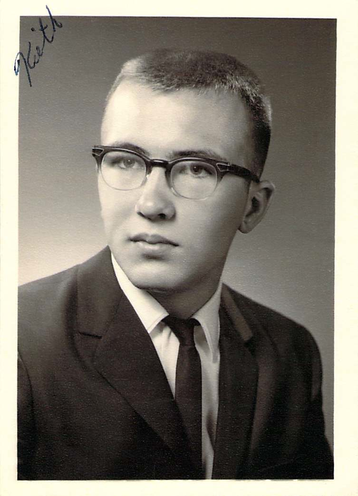
Dad was a volunteer. Sometimes, his impact stretched a little beyond the south end of Baldwin Road. Hughson was a part of his DNA, and he had a strong sense of community.
He was on the school site council for Hughson Elementary, and he successfully led the fight against year-round school. And he was the man behind the woman for the 20th Century Club.
My mom was a member—as was his mom—and for a number of years she spearheaded the Arts and Crafts Fair that raised money for the organization. Dad, along with Uncle Dave, dutifully marked out the spots for the booths each year; ran extension cords; laid out tarps; set up tables. Dad could lead, but he was also good at taking direction. Volunteering was never about ego for him. Just about helping.
Much of my parents’ community service followed the seasons of mine and Amy’s activities. Dad became an accidental soccer coach—a game I don’t think he had ever played or even watched before he stepped in for an absent coach halfway through the legendary run of the undefeated “Cole’s Trucking” under-8 soccer team. He coached every single soccer team Amy and I ever played on after that.
He went on to serve many years on the board of the Turlock Youth Soccer Association, and was the self-appointed guardian of the referees. No young ref would ever be yelled at on his watch. Along with Joey Paulson and me, Dad even got licensed as a FIFA referee (the three of us laughed until we cried on those rides to and from class), and kept that license up for over 30 years. He never refereed a match.
Mom and Dad were also fixtures at Hughson swim meets throughout the ’80s and ’90s, volunteering alongside many of you here today. They made many great friends along the way and were together awarded the team’s first “volunteer award.” For a number of years at the end of his life, Dad served on the finance committee at the Hughson Methodist Church.
By a show of hands, who here ever served the community alongside Dad or was the direct beneficiary of his selfless effort to make Hughson schools better or Hughson youth sports possible?
That’s Dad’s legacy.
The JokerDad Loved to Laugh
Dad loved to laugh.
He loved to make people laugh.
He especially loved to make himself laugh (a trait that Amy and I have inherited in spades).
Dad was certainly his own best audience. Mom often tells stories of watching Dad across the street, on the tractor, laughing at whatever comedy routine was going on in his head.
He was sarcastic, irreverent and clever.
And he was a prolific practical joker.
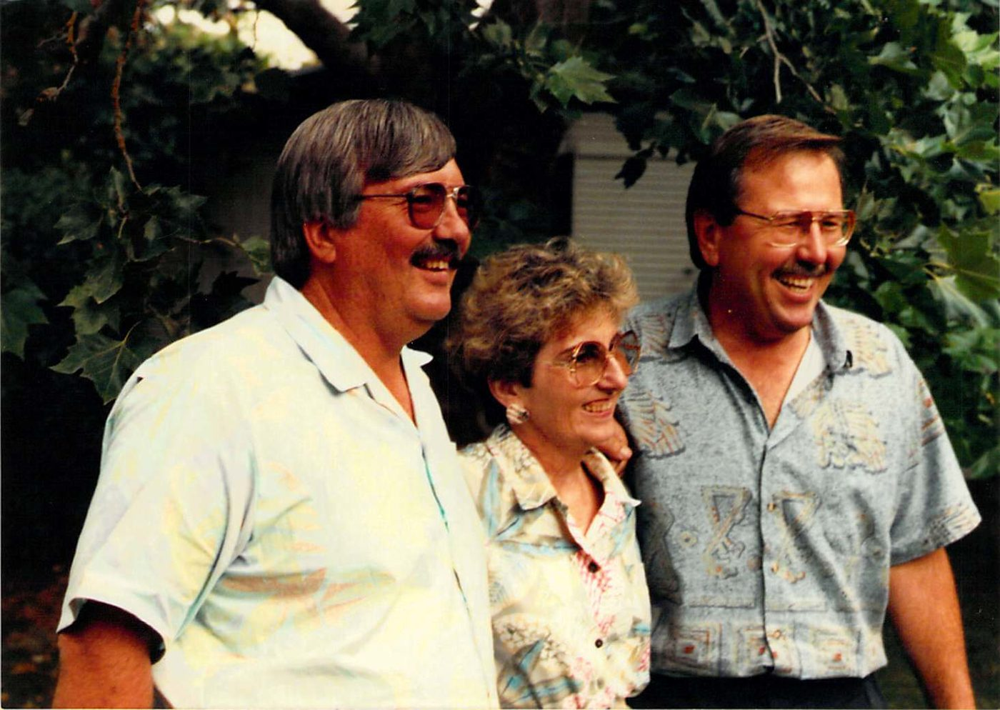
This started at a very young age, and Aunt Betty was a regular target. When I asked her to share some memories about Dad, she remembered a secret passage that led from her parents’ room—in that house across the street—into what was a then-teenage Betty’s bedroom.
Apparently, Dad often led Uncle Brad on missions to annoy his sister through the secret passageway. Incidentally, I did the same thing to annoy Amy when we were young. Dad must have been very proud.
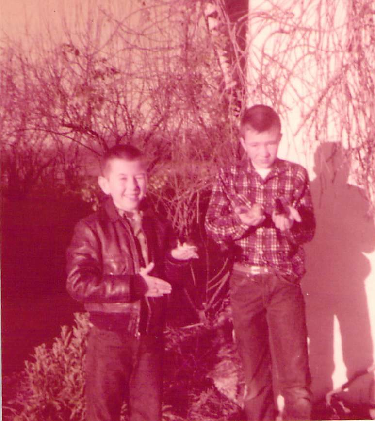
One of my dad’s favorite stories to tell was about the time that Aunt Betty, by then in college, had a date coming over. She informed her brothers that “under no circumstances should you bring one of the chickens in the house, because this guy is afraid of chickens.”
Can you guess what happened next?
The guy hadn’t been seated in the living room a full minute before a 10-year-old Dad and his trusty little sidekick came marching into the house with Clyde the rooster.
Aunt Betty, you kind of did that one to yourself.
As years went on, Dad’s pranks got more sophisticated and prolific. Dad and Uncle Brad were famously on opposite sides of the political spectrum, so in the late ’90s, when Marta was in middle school, Dad sent her home from Christmas with a bumper sticker. He instructed her to wait a couple months and then put it on her dad’s car.
Two months later, a “Right on Rush” sticker—referring to the Rush Limbaugh radio show—mysteriously showed up on Uncle Brad’s car.
One year, our friend Brian Silva made the mistake of telling Dad how annoying he thought it was to get Christmas cards really early in the holiday season. Dad went out and bought 12 Christmas cards; he sent one to Brian on the first of every month for the entire following year.
My Uncle Dave really hates Cheetos. A few years ago, after hearing him complain one day about just how much he really. Hates. Cheetos. My dad ordered a giant box of Cheetos to be delivered to his house.
The April Fools’ jokes are just too numerous to even catalog. Every. Single. Year, Dad went after everyone. Amy and I finally stopped answering calls or texts from him on April 1st, so he turned to his grandkids.
Over the last 15 years, the number of horses, pigs, deer, and imaginary creatures that have gotten loose and showed up in my parents’ backyard—only to disappear as soon as a gullible grandkid came down to look for it—is truly amazing.
Vivi and especially Charlie are my dad’s most promising disciples. They both love to prank, which gave my dad great satisfaction, knowing the tradition will live on.
If you want to honor Dad, every year on April 1st, call someone and tell them there is an unexpected animal in their backyard.
By a show of hands, who here ever got to laugh with Dad, laugh at Dad, make Dad laugh, or suffer from one of his merciless practical jokes?
That’s Dad’s legacy.
The FriendThe Kind of Friend I Aspire to Be
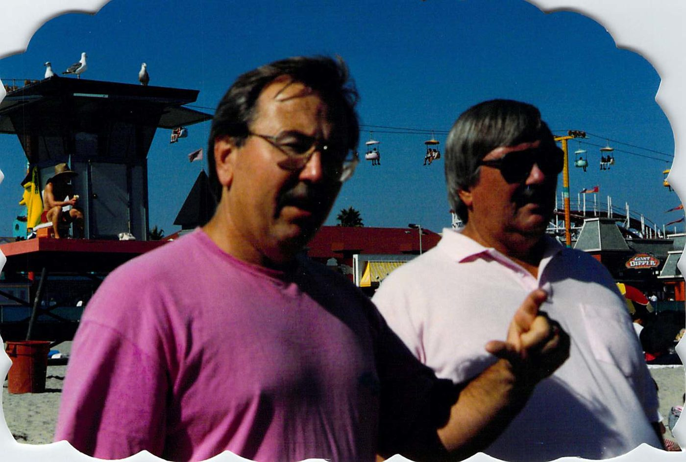
Dad was an incredible friend. The kind of friend that I aspire to be.
Much has already been said today about the kind of friend that he was, and the sheer size of the group here is a testament to that.
But I would be remiss not to mention it again here. He was warm; he was loving; he was fun; he was generous to a fault. And he truly, truly cherished his friends.
By a show of hands, who here considered Dad a friend and, as his friend, were made to feel like family?
That’s Dad’s legacy.
The Family ManThe Ultimate Home Teamer
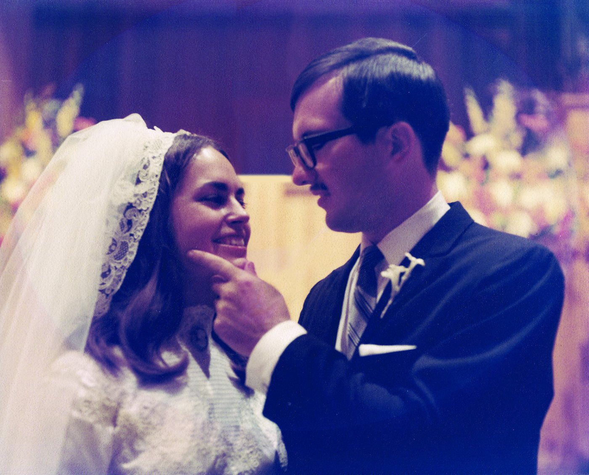
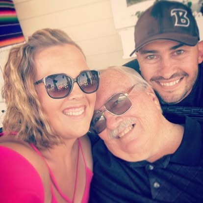
My dad was a true family man. When telling people about him, one of the first things I always mention is that he was the ultimate home teamer. He was like an irrational sports fan, and his team was The Monroes. My conversations with Dad went something like this:
MeSo, Amy got a new job.
DadThat’s awesome! Of course, she did! She’s amazing. I’m gonna call her. I want to hear every detail…
MeSounds like someone gave Amy a hard time.
DadThat person is clearly wrong, stupid, and generally terrible. We should probably see about getting them arrested. I’m gonna call her and get every detail…
MeHey, I started a podcast.
DadI’m sure it’s the best podcast anyone has ever done. You guys probably already have several thousand listeners. I’ve already ordered 2,000 pens that say “Bev’s Video Kingdom.” Ok, now tell me every detail, and show me how to listen.
Incidentally, our episodes came out at 4 a.m. every Tuesday. Every week, Dad was the first listener.
MeCourtenay got promoted to full professor early.
DadObviously, she’s internationally famous, is a top person in her field, and her research is groundbreaking. They are lucky to have her. Tell her to come down so I can hear every detail…
MeAbby got all A’s this semester.
DadWell of course she did, she’s brilliant and hardworking and deserves an A in every class, and any teacher that doesn’t give her an A is stupid. Ask her to call me so I can get every detail…
MeWill just got back from soccer camp.
DadI bet it was great! He’s such an incredible young man. He always makes the most of things like that. I can’t wait to hear more. Ask him if he wants to come down for dinner so I can hear every detail…
MeCharlie had a great game today, she scored two goals.
DadIncredible! I’m not surprised. She has a real head for the game. So smart and focused and determined. And she’s gotta be really fast. Can she come down and say hello tomorrow so I can hear every detail…
MeVivi is doing really well at her new school.
DadThat’s great! I bet everyone loves her. She’s so funny and so clever. And more articulate than any 4-year-old I know. And did I mention how funny she is!? I can’t wait to ask her about it and hear every detail…
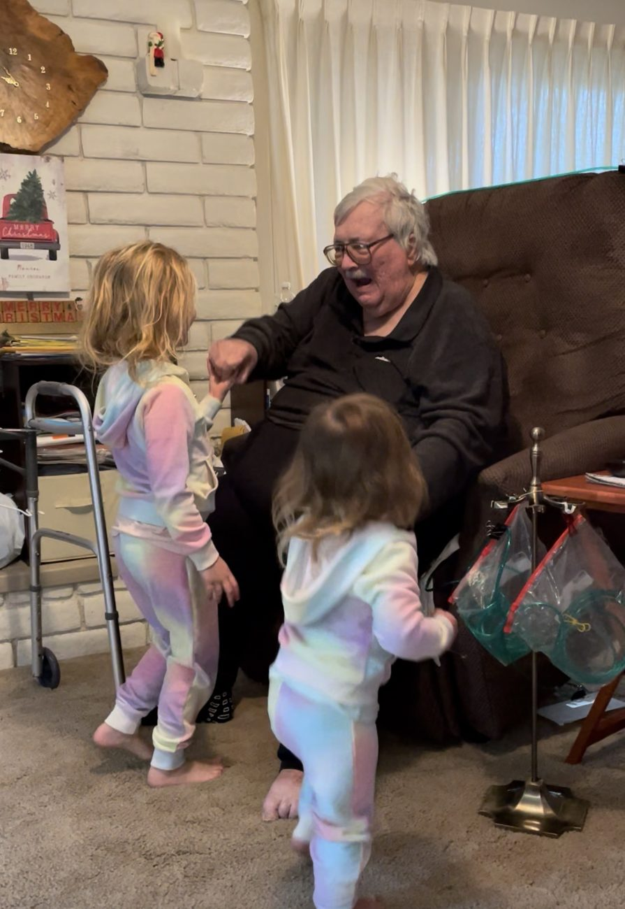
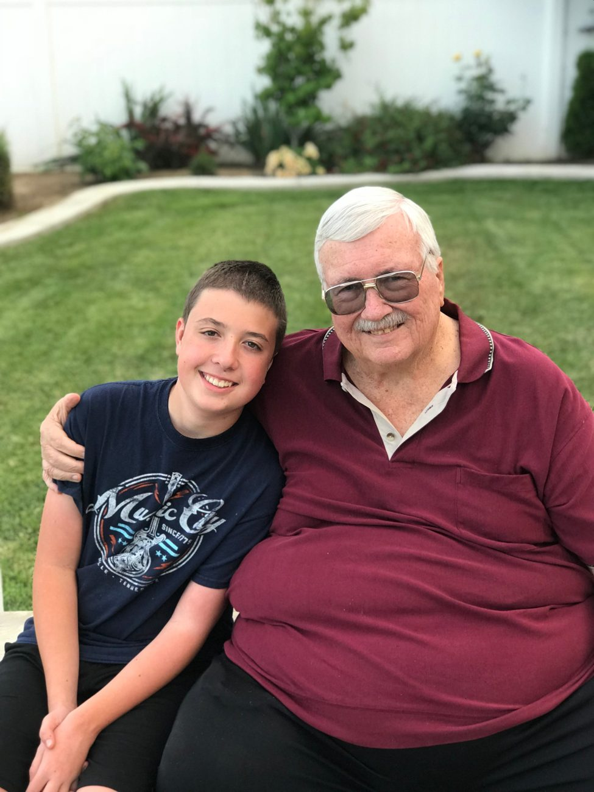
See, like any good sports fanatic, he didn’t just root for the team. He wanted to read every box score. He kept track of every stat.
And one last conversation, one that I had more times than Mom would probably believe:
MeHow’s Mom doing?
DadShe’s good… Ya know, Nate, you and Amy got really lucky to have her as your mom. She’s a truly great mom. And she sure loves your kids a lot. She’s the best grandma.
And of course I got really, really lucky too.
Dad was a positive person. He had a remarkable ability to look at the bright side, see the glass half full, and never dwell much on the past.
But when it came to The Monroes, he became a true fanatic. He loved and cherished us, and he made sure we knew it. And of course, Dad’s favorite team, “The Monroes,” included many who neither shared the name Monroe nor shared any blood with him. Indeed, to Dad, everyone here today plays for The Monroes.
By a show of hands, who here was lucky enough to feel the warmth of Dad’s love, to feel him rooting for you, taking interest in you, believing in you, supporting your most important endeavors?
That’s Dad’s legacy.
The Movie LoverHe Liked What He Liked
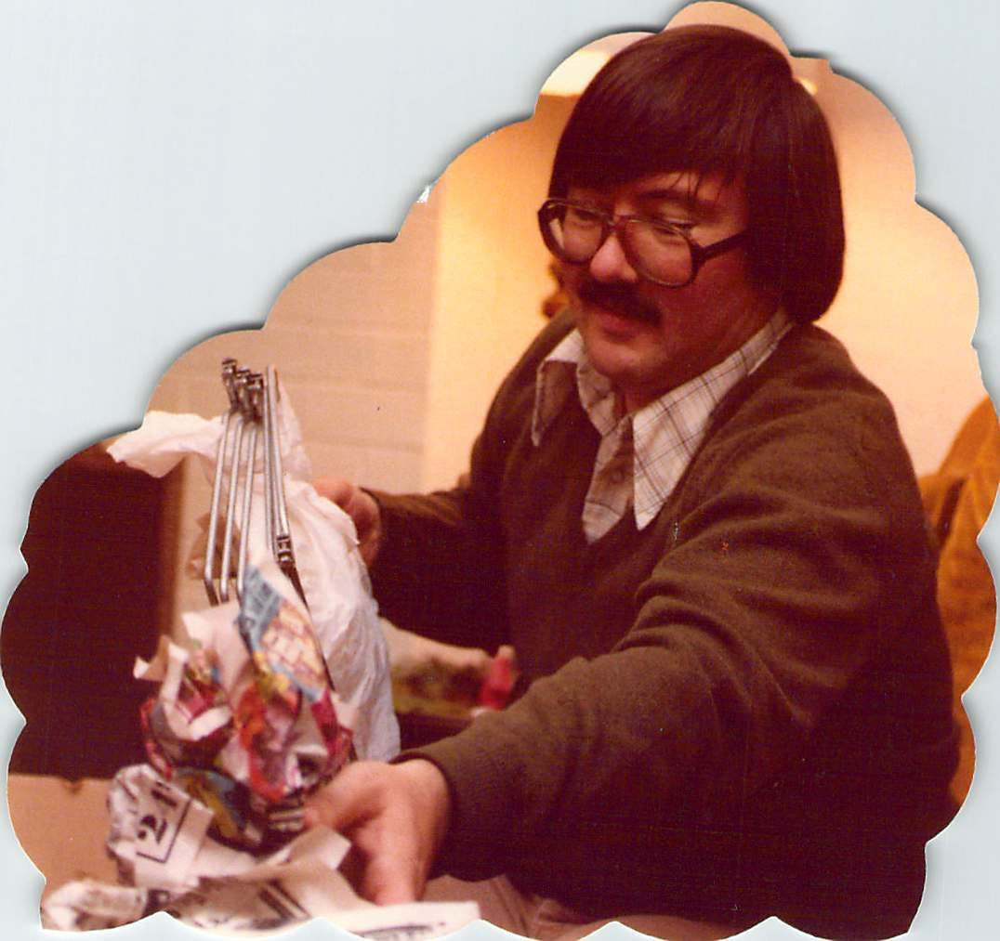
Dad loved movies and TV.
Not film; he wasn’t into the art and he had no pretense about it. He just loved to be entertained, and he was unapologetic about what he liked.
Here’s a sample of the movies he listed when asked his favorite movies:
True Lies, Forrest Gump, Any Which Way You Can, Pulp Fiction, Titanic, Airplane!, Superbad, Sixteen Candles, The Jerk, M*A*S*H, Vacation, Happy Gilmore, Young Frankenstein, Good Morning, Vietnam, Zero Dark Thirty, Mary Poppins, Dirty Dancing, The Hurt Locker, The Deer Hunter, Braveheart, Breakfast at Tiffany’s, Working Girl, Forgetting Sarah Marshall, Wedding Crashers, Good Will Hunting, Top Gun, My Best Friend’s Wedding, Taken, Up in Smoke, Animal House, The Bourne Identity.
And of course, Notting Hill.
There were dozens more. It was an eclectic mix, but he liked what he liked, and I always respected that.
As kids, we went to the movies just about every weekend, and to the video store at least that often. He and I spent many nights irrigating, watching one action movie after another, trying to stay awake; taking breaks to check the water and talking about what we liked or didn’t like so far.
And in his last years, he found a lot of contentment in the ever-expanding TV and movie options. And he found joy sharing moments in the living room with Abby, Will, Charlie, and Vivi, watching shows and movies he had recorded for them; bonding with them that way.
I still remember riding in his old green truck to see my first movie theater movie—Return of the Jedi. I didn’t understand what it meant to go to the movie theater, but I could feel my dad’s excitement as we drove. A true love of movies is something I shared with my dad, and it always felt like a very important connection. As insignificant as it might sound, one of the things I’ll miss most is talking to him about a new movie or TV show that we both had just seen for the first time.
By a show of hands, who here ever watched or discussed a movie or TV show with Dad? Or got or gave a recommendation?
That’s Dad’s legacy.
The FarmerDad’s Real Legacy
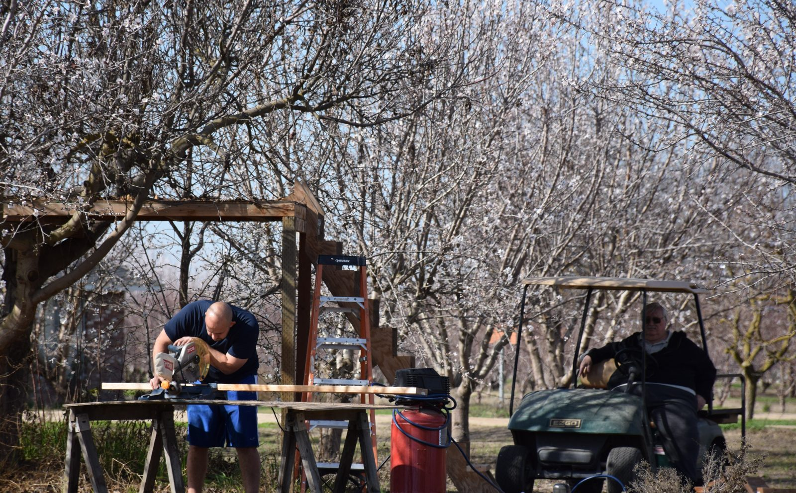
Dad was a farmer. In a sense, this was his most obvious identity. He spent his entire life as a farm kid or as a farmer. He loved it, he was good at it, and he made a good living doing it. He cherished the land, and the work, and he enjoyed sharing the farming experience with others.
And yet, to my dad, I don’t think the most important thing about the farm was ever really the farming. Only now, with the full picture in front of me, do I understand that. Here’s what I mean:
The place you now sit was once the site of a cherry orchard where Dad laughed to himself while he drove the tractor, where young people learned to work, where people earned their living, where kids lay quietly in the night, hiding from their friends during a game of late-night ditch.
The lane behind you was where I took my first walk alone to see my grandma; where Amy famously “lost control of herself” and wandered off into the orchard on our first walk alone together; where I learned to drive; where my dad and I used to sit, waiting for the water to fill a check on cool summer nights, talking about any topic that wandered by; where he went on “crazy golf cart rides” with each of his grandkids.
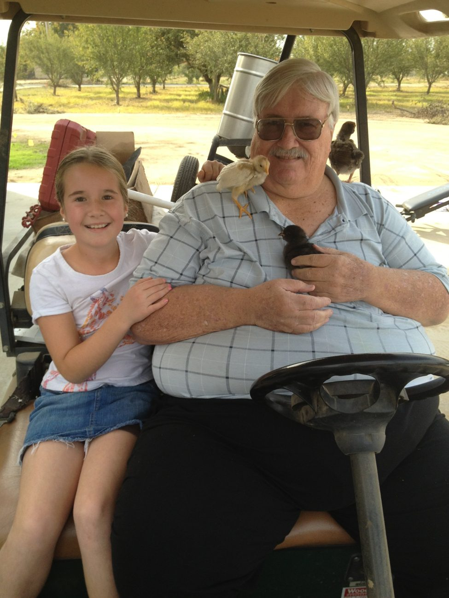
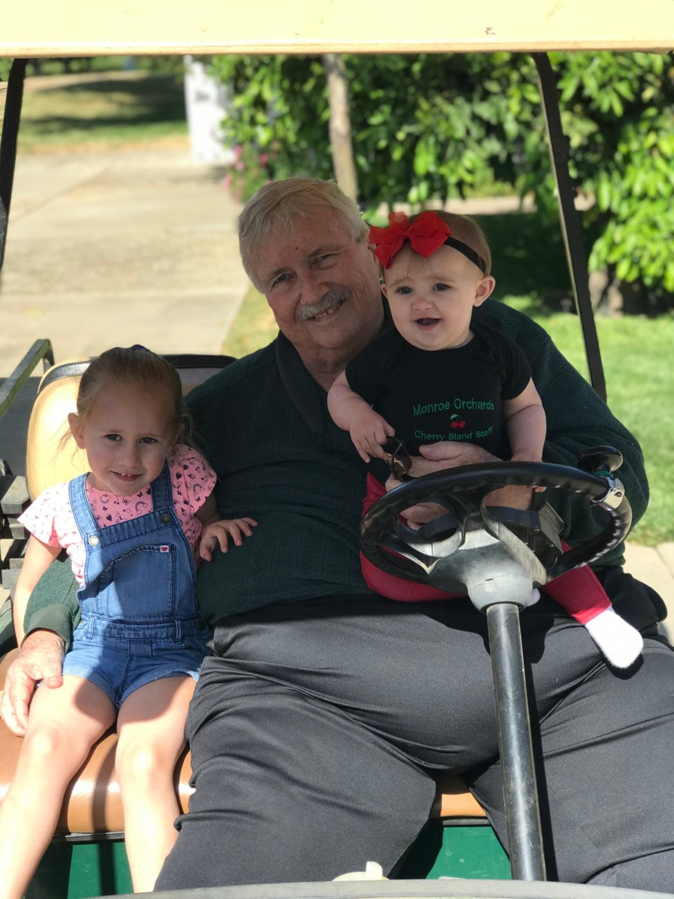
The pipelines, like that one, and the levees that snake through the ranch, have been the sites of generations of dirt clod fights, comical falls into running irrigation water, foolish teenage shenanigans, peaceful moments of contemplation, and frantic teamwork, shoveling dirt together to fill in a gopher hole.
The driveways along Baldwin Road have been the sites of dozens of years of cherry stands, where many of you had your first paid job, where old friends stopped by to chat, where countless cherry pits were spit by competitors, young and old.
The Monroe houses and backyards on the south end of Baldwin Road have been the sites of birthday parties and sleepovers and family reunions and Christmas mornings and bonfires and picker parties and Sunday dinners and lawn games of all sorts.
And even today, we’ve gathered here—at the south end of Baldwin Road—to connect with one another and to celebrate a man who deeply understood a fundamental truth about life and love and purpose:
If you make a place… a space… for all the people who you will ever love and cherish…
…and for all the people who those people love and cherish enough to bring to that place you’ve created…
And then you warmly and openly offer that space—and yourself and all that you have to give…
From that, a lifetime of experiences and connections will grow.
The space my dad created was this ranch. He wasn’t just a farmer of cherries, and almonds, and walnuts. In fact, I think growing fruit and nuts was just the window dressing.
By a show of hands, and please keep them up…
Here, on the south end of Baldwin Road, how many of you have ever made a friend? Learned something valuable? Gained confidence? Found comfort? Worked harder than you ever had before? Laughed until you cried? Celebrated something meaningful? Made a memory that will make you smile every time you ever think of it? Shared an important moment with people you loved, or people you came to love?
Look around.
That is Keith Monroe’s most important legacy.
That is what he meant to leave behind.
That is how I know my dad is here with us today.